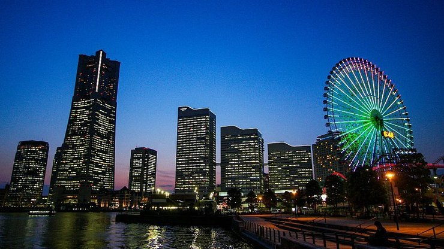
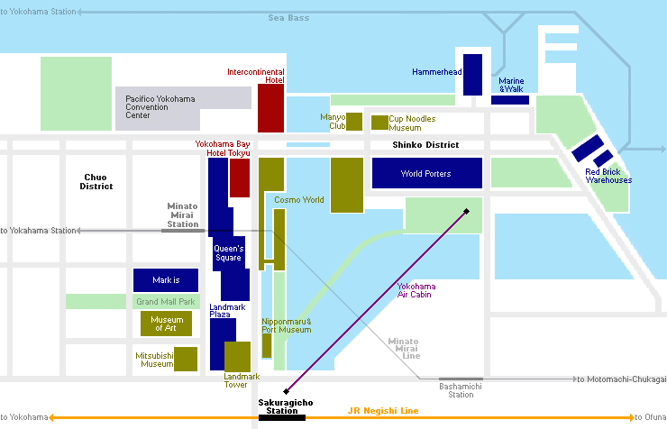

Minato Mirai 21
みなとみらい 21
Minato Mirai 21 (みなとみらい 21) is a seaside urban area in central Yokohama whose name means "harbor of the future". It has many large high-rises, including the Landmark Tower, which was Japan's tallest building from 1993 until 2014. The area was a large shipyard until the 1980s, when development began to turn it into a new city center.
Minato Mirai is blessed with a great location along the water and has a wealth of attractions. Visitors to the area will be able to find shopping centers, hotels, a convention center, an amusement park, a relaxation center with hot spring baths, museums and park space.
Located along the waterfront, the buildings of the Minato Mirai Chuo district ("central district") form the distinctive skyline of Yokohama. At 296 meters, the Landmark Tower is the most recognizable feature. The three Queen's Towers are located beside, each one being a little shorter than the next, followed by the Yokohama Bay Hotel Tokyu and the Pacifico convention center, one of the largest in Japan, which includes the rounded Intercontinental Hotel. The district extends inland, where redevelopment is still ongoing.
Connected to the Chuo district, across from the Pacifico, is a large man made island which constitutes the Minato Mirai Shinko District ("new harbor district"). The most recognizable feature of the island is the Cosmo World Ferris Wheel, which displays the time and was for some time considered the world's largest clock.
